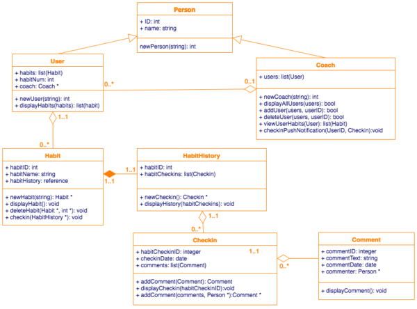
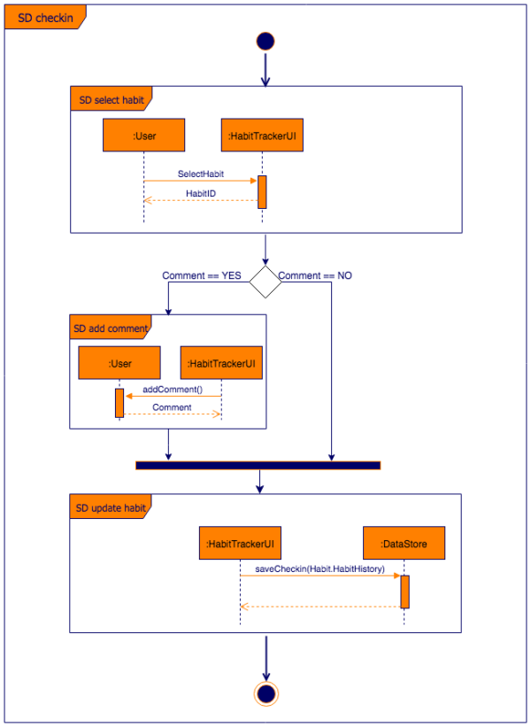

Use case diagrams are created when you are looking at the requirements of your system or program. They represent the functions or features, the actors and how these relate to each other (their relationships).

The Unified Modeling Language (UML) is a diagramming notation (language) that lets you visualize systems and software. It’s one of the most popular forms of diagramming in software development and became an ISO standard in 1997. Since then, there have been a few updates to add extra UML diagram types and to support new technologies in programming.
There are two main categories and 14 different types of UML diagrams, each of which is used in a different situation.

Use case diagrams are created when you are looking at the requirements of your system or program. They represent the functions or features, the actors and how these relate to each other (their relationships).
Object oriented programming languages are based on classes and the relationships between them. UML class diagram notation was developed to represent these programs visually. Classes contain their attributes (their data) and behaviors (member functions), and are related to each other with a variety of connectors.
Sequence diagrams are used to visualize both interactions within programs, business processes and IT infrastructures. They describe the sequence of interactions (messages) between actors and objects (things like databases or external interfaces).

Activity diagrams model the behavior of users and systems as they follow a process. They are a type of flow chart or workflow, but they use slightly different shapes.

State diagrams have been used in programming to describe the various states that a system can be in for decades. They aren’t limited to programming – every system and process has states. These diagrams are faster to create than activity or sequence diagrams, but show less information. State diagrams show which states lead to each other, and what triggers a change of state.

These UML diagrams are a combination of an activity diagram and sequence diagrams, where each individual activity is placed in its own frame, so it is easier to program.
These used to be called collaboration diagrams. They are similar to use case diagrams, detailing the information that is transferred. However, sequence diagrams are more often used to visualize the communication between objects as they are clearer and have a richer notation.